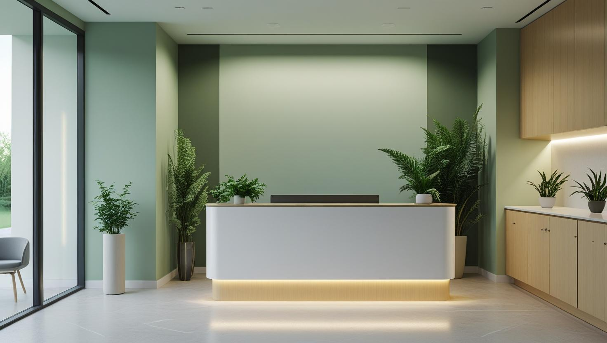
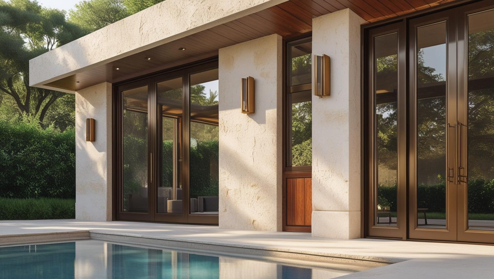
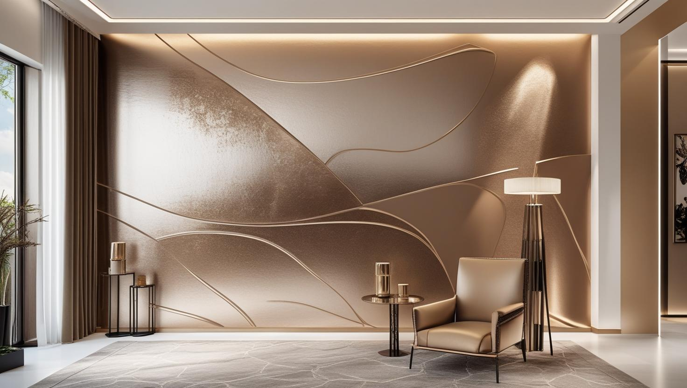

İstanbul Beylikdüzü Profesyonel Boya Ustası
20 yıllık tecrübemizle Beylikdüzü'nde site dairesi, dubleks ve iş yeri boyamasını site yönetiminin kurallarına ve duvarın durumuna göre planlıyoruz. Keşif ücretsiz, teklif yazılıdır.
Beylikdüzü'nde Boya Badana: Site Dairesi ve Deniz Nemi
Beylikdüzü boyacı ve Beylikdüzü boyacı ustası talebi ağırlıkla konut sitelerinden geliyor. İlçedeki yapı stoğu görece yeni; duvar yüzeyleri çoğunlukla düzgün olduğu için iş astar ve kat uygulamasına odaklanıyor.
Marmara kıyısına yakın konumdaki bloklarda, özellikle denize bakan ve dış duvara sırtını veren odalarda yoğuşma kaynaklı nem görülebiliyor. Bu odalarda astar seçimi boyanın ömrünü belirleyen ana etken oluyor.
Sitelerde çalışma saatleri, yük asansörü ve yönetim izni işin planına giriyor. Beylikdüzü boya badana işlerinde eşyalı çalışma standart uygulamamız.
Hizmetlerimiz

İç Mekan Boyama
Site dairelerinde iç cephe boyama genellikle taşınma öncesinde ya da teslimdeki müteahhit boyasını yenilemek için gündeme gelir. Keşifte duvarın boyayı tutup tutmadığı, tavan yüksekliği ve eşya durumu birlikte kontrol edilir.
- Müteahhit boyası üzerine astarlı uygulama
- Dubleks merdiven boşluğu ve yüksek duvarlar
- Koridor ve çocuk odası için silinebilir boya
- Alçı ve sıva tamiri, kapı ve kartonpiyer boyama

Dış Cephe Boyama
Beylikdüzü'nde dış cephe boyası çoğunlukla tek bir dairenin değil, bloğun ya da sitenin ortak kararıdır. Keşifte cephe metrajı, erişim yöntemi ve blokların hangi sırayla boyanacağı birlikte ele alınır.
- Blok bazında etaplı cephe boyası
- Mantolama üzeri boya uygulaması
- Balkon ve teras duvarları
- Çatlak dolgusu sonrası astar ve son kat

Dekoratif Boyama
Yeni taşınılan bir site dairesinde dekoratif boya için salonda ya da yatak odası başında tek bir duvar iyi bir başlangıçtır. Beton veya mermer efektine karar vermeden önce numuneyi hem gün ışığında hem akşam aydınlatmasında görmek seçimi kolaylaştırır.
- Beton ve mermer efektli vurgu duvarı
- İtalyan boya ve sedef boya
- Numune üzerinde renk ve doku seçimi
- Ofis ve iş yeri için kurumsal renkler
Fiyat Tablosu
| Hizmet Türü | Metrekare Fiyatı | Ortalama Süre (100m²) | Garanti |
|---|---|---|---|
| İç Cephe Boyama | 100-200 TL | 2-3 Gün | Uygulama kapsamına göre |
| Dış Cephe Boyama | 180-280 TL | 3-5 Gün | Uygulama kapsamına göre |
| Dekoratif Boyama | 250-500 TL | 4-7 Gün | Uygulama kapsamına göre |
| Ofis Boyama | 150-250 TL | 2-4 Gün | Uygulama kapsamına göre |
Metrekare fiyatları yaklaşık ön değerlendirme aralığıdır. Uygulanacak ölçüm yöntemi, boyanacak alanın kapsamı, yüzey durumu, tamirat ihtiyacı, kat sayısı ve malzeme seçimi keşif sırasında netleştirilir.
Dış cephe boya fiyatları uygulama alanı için yaklaşık 180–280 TL/m² aralığındadır. Kesin hesaplama yöntemi ve teklif; yüzey durumu, bina yüksekliği, erişim veya iskele ihtiyacı, tamirat kapsamı, boya sistemi ve uygulanacak kat sayısına göre keşif sırasında netleştirilir.
Uygulama kapsamına göre işçilik garantisi sağlanır. Garanti kapsamı ve istisnaları teklif veya iş sözleşmesinde belirtilir.
Bu rakamlar İstanbul Boyacılık'ın 2026 gösterge fiyat aralığıdır. Bir piyasa ortalaması değildir. Kesin fiyat; yüzey durumu, hazırlık ve tamirat miktarı, uygulanacak kat sayısı, seçilen malzeme sınıfı, ulaşım ve kat koşulları ile evin eşyalı mı boş mu olduğu keşifte görüldükten sonra belirlenir.
Beylikdüzü'nde hazırlık kalemi çoğu işte sınırlı kalıyor. Aralığı yukarı taşıyan iki şey var: denize bakan cephelerde çıkan nem onarımı ve ek astar ihtiyacı ile site içi çalışma ve taşıma koşullarının işin gün sayısına etkisi.
Beylikdüzü'nde Yeni Teslim Dairede Müteahhit Boyasının Üzerine Boya
Yeni teslim alınan bir dairede duvardaki ilk kat çoğu zaman astarsız sürülmüş, tozuma yapan ekonomik bir boyadır. Bu yüzeye doğrudan yeni renk sürmeden önce boyanın duvara tutunup tutunmadığını kontrol etmek gerekir.
Basit bir deneme yapabilirsiniz: duvarı nemli bir bezle silin ya da bir parça bant yapıştırıp çekin. Bezde beyaz iz kalıyor veya bantla birlikte boya kalkıyorsa eski katman fırçayla temizlenmeli, uygun astar sürülmeli ve yeni boya bundan sonra uygulanmalıdır. Duvar düzgün görünse bile bu adım atlanırsa yeni boya silindiğinde çıkabilir ya da kısa sürede lekelenebilir.
Astardan sonra hangi son katı seçeceğinize karar verirken plastik boya ile silikonlu boya arasındaki farkı anlatan rehberimize göz atabilirsiniz; koridor ve çocuk odası gibi sık temizlenen yerlerde bu seçim önem kazanır.
Beylikdüzü Sitelerinde Daire Boyatmadan Önce Yönetime Sorulacaklar
Site içinde boya işi, yönetimin izin verdiği düzen içinde yürür. Keşiften önce birkaç kuralı öğrenmek, işin yarıda kalmasını ve takvime sonradan gün eklenmesini önler.
- Çalışma bildirimi: Bazı siteler daire sahibinden yönetime yazılı bildirim ya da form istiyor; ustaların giriş kaydı da bu aşamada yapılıyor.
- Araç girişi ve otopark: Malzeme aracının site kapısından girişi ve yükleme yapılacak nokta güvenlikle önceden konuşulmalı.
- Asansör ve koridor: Kabin içinin nasıl korunacağı ve malzemenin hangi asansörle taşınacağı yönetimin kuralına göre belirlenir.
- Atık düzeni: Boş kova, örtü ve bant atıklarının nereye bırakılacağı sitenin çöp düzenine uygun planlanır.
Bu bilgileri keşif randevusunda paylaşırsanız çalışma planını site kurallarına göre kurar, yazılı teklifte kapsamı buna göre belirtiriz.
Site Ortak Alanı ve Blok Cephesinde Karar Nasıl Alınır?
Dış cephe, merdiven holü ve otopark duvarları gibi ortak alanlar tek bir malikin değil, kat maliklerinin ortak kararıyla boyanır. Bu nedenle bu işlerin teklifi genellikle site ya da blok yönetimine sunulur.
Kararın nasıl alınacağı ve bütçenin nasıl paylaşılacağı sitenin yönetim planına ve kat malikleri kurulunun kararına göre belirlenir. Cephe rengini değiştirmek de genellikle aynı onaya bağlıdır; kendi balkonunuzun dış yüzünü farklı bir renge boyatmadan önce yönetim planını kontrol etmeniz iyi olur.
İskele kaldırım ya da yol kullanımını gerektiriyorsa belediyeden izin alınması gerekebilir. Çok bloklu sitelerde cephe işini blok blok ilerletmek, sakinlerin otopark ve giriş düzenini daha az etkiler.
Dubleks, Çatı Katı ve Bahçe Katında Boya Fiyatını Değiştiren Kalemler
Beylikdüzü boya badana fiyatı, aynı metrekaredeki iki daire arasında bile dairenin tipine ve istenen boya sınıfına göre değişir. Güncel metrekare aralıklarını sayfadaki fiyat tablosunda görebilirsiniz; kesin tutar keşiften sonra yazılı olarak netleşir.
- Dubleks ve çatı katı: Galeri boşluğu, merdiven üstündeki yüksek duvar ve eğimli tavanlar yüksekte çalışma ekipmanı ve ek işçilik ister.
- Bahçe katı: Bahçe duvarı veya pergola gibi dış yüzeyler istenirse iç cephe teklifinden ayrı bir kalem olarak yazılır.
- Renk geçişi: Koyu bir renkten açık bir tona dönmek ek kat, bazen de renkli astar gerektirir.
- Boya sınıfı: Silinebilir ve lekeye dayanıklı seriler, ekonomik iç cephe boyalarına göre teklifi yükseltir.
- Eşyalı ya da boş daire: Mobilyaların oda içinde toplanıp örtülmesi gereken işlerde hazırlık süresi uzar.
Bir Beylikdüzü boya ustasından teklif alırken daire tipini, istediğiniz renkleri ve taşınma tarihinizi keşifte konuşmak, teklifin bu kalemlere göre satır satır hazırlanmasını sağlar.
Beylikdüzü’nde Hizmet Verdiğimiz Mahalleler
Sahil tarafındaki sitelerden OSB'deki iş yerlerine kadar aşağıdaki mahallelerin tamamında ücretsiz keşif randevusu veriyoruz:
Beylikdüzü Mahalleleri
- Beylikdüzü Adnan Kahveci Mahallesi
- Beylikdüzü Barış Mahallesi
- Beylikdüzü Büyükşehir Mahallesi
- Beylikdüzü Cumhuriyet Mahallesi
- Beylikdüzü OSB Mahallesi
- Beylikdüzü Dereağzı Mahallesi
- Beylikdüzü Gürpınar Mahallesi
- Beylikdüzü Kavaklı Mahallesi
- Beylikdüzü Marmara Mahallesi
- Beylikdüzü Sahil Mahallesi
- Beylikdüzü Yakuplu Mahallesi
Beylikdüzü Boyacılık Müşteri Yorumları
"Beylikdüzü'nde evimizi boyattık, ekip gerçekten çok özenli ve profesyoneldi. Sonuçtan çok memnun kaldık."
Selin Acar
Adnan Kahveci / Beylikdüzü
"İç cephe boyama işimizi kısa sürede ve çok temiz şekilde teslim ettiler. Fiyat/performans açısından harikaydı."
Tuncay Yıldız
Gürpınar / Beylikdüzü
"Ofis boyama için başvurduk, zamanında geldiler ve tertemiz iş çıkardılar. Herkese öneririm."
Melike Erdoğan
Marmara / Beylikdüzü
Faydalı Bağlantılar
Beylikdüzü boya badana planında fiyat hesabı, boya markası ve yakın ilçe seçeneklerini birlikte değerlendirmek için aşağıdaki rehberler kullanılabilir.
Beylikdüzü Boyacı Ustası — Site Dairesi ve Sahil Konutları İçin Sorular
Beylikdüzü'nde yeni teslim aldığım daireyi taşınmadan önce boyatmalı mıyım?
Mümkünse evet. Oda boşken duvarların tamamı açıkta olduğu için hazırlık kontrolü rahat yapılır, mobilya örtme ve yeniden yerleştirme adımına da gerek kalmaz. Müteahhit boyası silindiğinde iz bırakıyorsa önce astar gerekir; bunu keşifte duvarı deneyerek söylüyoruz.
Denize bakan odada duvarda küf lekesi var, boya çözer mi?
Boya tek başına çözmez. Küf çoğu zaman yoğuşmanın sonucu; kaynağı çözülmeden uygulanan boyanın altında sorun devam ediyor. Keşifte önce yoğuşma kaynağını değerlendiriyoruz, ardından uygun hazırlık ve astar sistemini uyguluyoruz.
Beylikdüzü boya badana ustası teklifinde hangi kalemler ayrı yazılmalı?
Astar ve uygulanacak kat sayısı, alçı ve sıva tamiri, kapı ve kartonpiyer boyası, balkon gibi dış yüzeyler ve kullanılacak boyanın markası teklifte ayrı satırlar hâlinde görünmelidir. Böylece iki teklifi aynı kapsamla karşılaştırır, işin sonunda ek kalem çıkıp çıkmayacağını baştan bilirsiniz.
Site içinde hafta sonu çalışabiliyor musunuz?
Site yönetiminin kurallarına bağlı. Bazı siteler hafta sonu çalışmaya izin vermiyor, bazıları belirli saat aralığı tanımlıyor. Randevu öncesinde bunu sizden öğrenip planı ona göre kuruyoruz.
Dubleks dairede merdiven boşluğunun yüksek duvarı nasıl boyanıyor?
Yüksek duvar ve galeri boşluklarında basamaklara uyumlu bir çalışma platformu ya da iskele sehpası kuruluyor; basamaklar ve korkuluk önceden örtülüyor. Bu ekipman işin süresini ve teklifini etkilediği için keşifte yüksekliği ölçüp teklifte ayrıca belirtiyoruz.
Balkon ve teras boyanıyor mu?
Boyanıyor; ancak dış mekân yüzeyi iç cepheden farklı bir boya sistemi istiyor. Denize yakın konumda tuzlu nem ve rüzgâr yükü nedeniyle yüzey hazırlığı burada daha belirleyici oluyor.
İletişim
İletişim Bilgileri
Telefon: 0507 832 29 12
E-posta: boyaustamistanbul@gmail.com
10+ Uzman Ustamızla Beylikdüzü ve çevresine hizmet veriyoruz.
Çalışma Saatleri: 7/24 (Pzt-Paz 00:00-23:59)